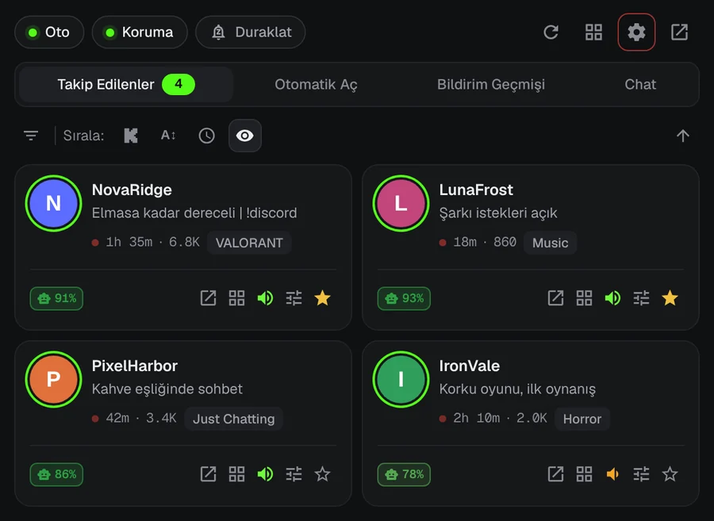
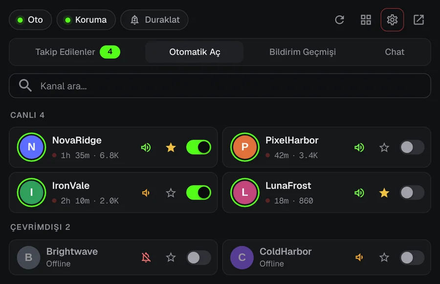
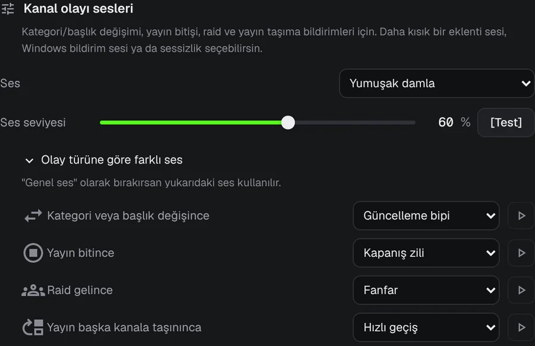
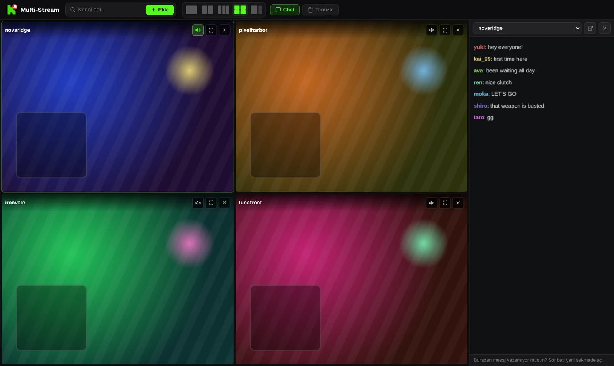

Kick yayınlarının başlangıcını bir daha kaçırma.
En sevdiğin yayıncı gece 3'te yayına giriyor. KickAlert, Kick sekmesi açık olmasa bile o an masaüstü bildirimi gönderir. Ücretsiz, kanal sınırı yok, veri toplama yok.
Edge ve Opera sürümleri yolda
 KickAlert
KickAlertDene. Bir zile bas.
Bu kanallar şu an çevrimdışı. Birinin zilini aç ve yayına girince neler olacağını izle.
Anında bildirim
KickAlert, Kick'in gerçek zamanlı bağlantısını dinler; bildirim dakikalar sonra değil, yayın başladığı an gelir. Kanal başına ses seç, rahatsız etme saatleri belirle ya da her şeyi sabaha kadar duraklat.

Otomatik açma
Hangi kanalların kendiliğinden açılacağını seç. Yayın başlar başlamaz yeni sekmede açılır, aynı yayın ikinci kez açılmaz; raid yayını başka kanala taşırsa sekme kendini kapatabilir.

Ne olduğunu sesinden anla
Raid, yayın sonu, kategori değişikliği ve taşınan yayın için kanal kanal ayrı bildirim ve ayrı ses seçebilirsin.

Sohbet radarı
Adın ya da seçtiğin bir kelime en fazla 5 kanalın sohbetinde geçince, Kick kapalı olsa bile bildirim al. Sohbet filtreleri spamı gizler, benzer harflerle yazılmış kelimeleri de yakalar.
Tek sekmede dört yayına kadar
Yayınlar sessiz başlar. Tek tıkla istediğin yayının sesini aç; sohbet yan panelde yer alır.

Yayın görüntüleri temsilidir.
Verilerin tarayıcında kalır
- Analiz aracı yok, veri toplama yok
- Yalnızca kick.com ile iletişim kurar
- Her izin ilk açılışta açıklanır
- GitHub'da açık kaynak
Sorular
KickAlert ücretsiz mi?
Evet. Tüm özellikler ücretsiz ve takip edebileceğin kanal sayısında sınır yok.
Kick'i açık tutmam gerekiyor mu?
Hayır. KickAlert arka planda çalışır, hiçbir Kick sekmesi açık olmasa da bildirim gönderir. Aynı tarayıcıda Kick'e giriş yapmış olman yeterli.
Kurdum ama bildirim gelmiyor.
Yeni kurulumda bildirimler kapalı başlar, böylece bildirim yağmuruna tutulmazsın. İstediğin kanalların zilini aç ya da Ayarlar'dan tüm kanallar için tek seferde aç. Her kanalın ayarlarındaki "Bu kanaldan bildirim gelir mi?" kontrolü, bildirimi engelleyebilecek başka bir şey varsa gösterir.
Hangi tarayıcılarda çalışıyor?
Şu an Chrome ve Firefox'ta; Edge ve Opera sürümleri yolda. Brave, Vivaldi ve diğer Chromium tabanlı tarayıcılarda Chrome Web Mağazası'ndan kurulabilir.
KickAlert'i kur
Edge ve Opera sürümleri yolda